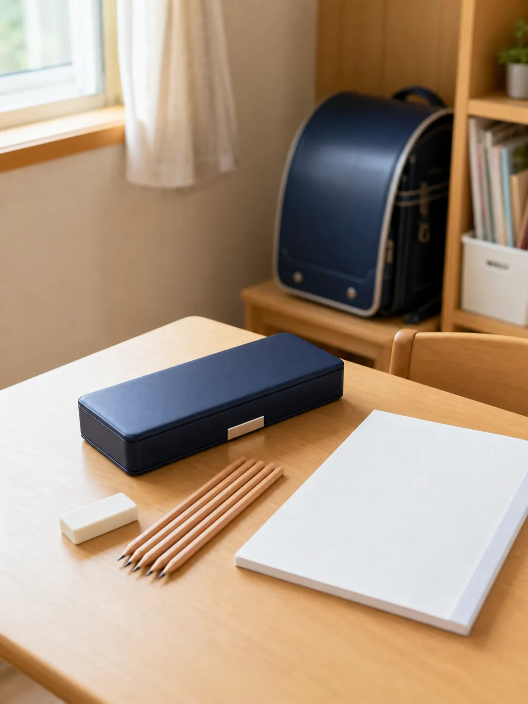
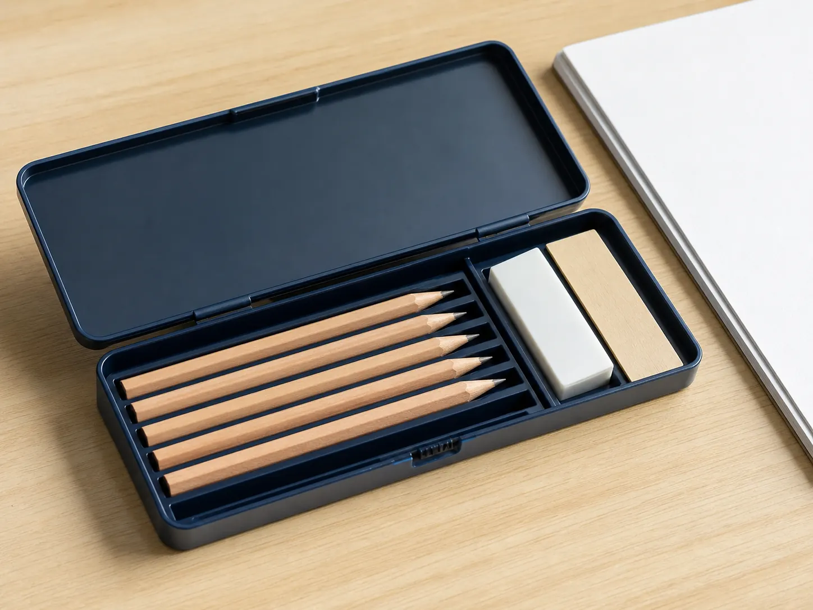
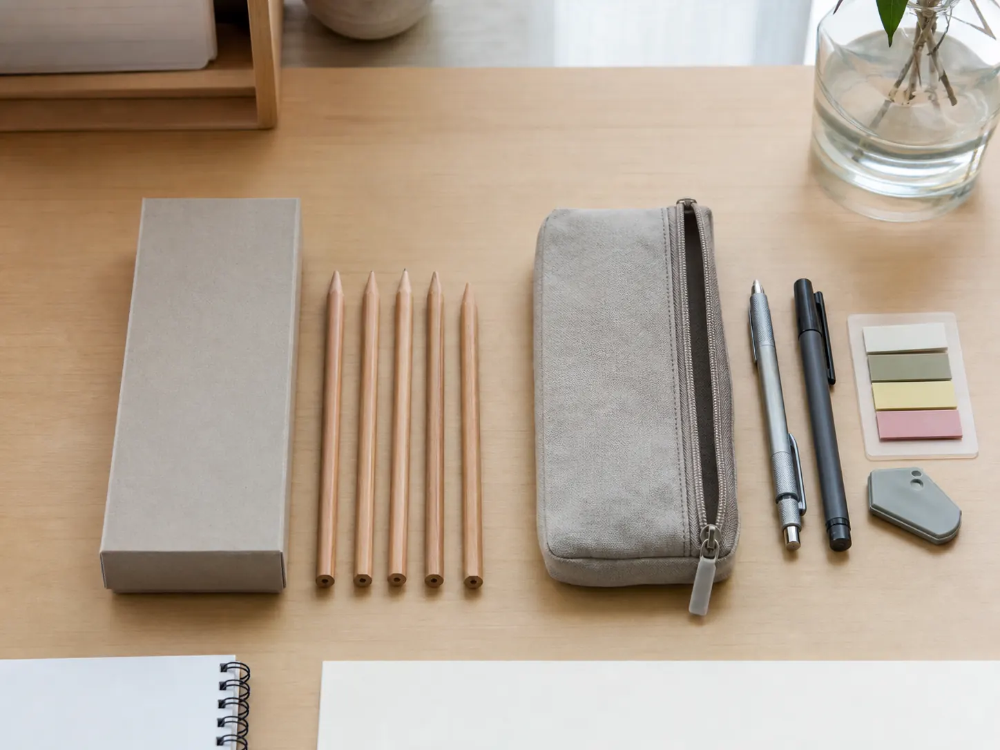

Learn the reason first. Discover the product second.
Why Do Japanese Elementary Students Use Hard Pencil Cases?
Why do many Japanese elementary-school children carry rigid, box-shaped pencil cases instead of simple zippered pouches?
The answer is not that every child in Japan uses the same case. School guidance, family choices, age, place, and era all matter. But a hard case makes particular sense when a young student is expected to bring several sharpened wooden pencils, see each tool clearly, and prepare a small set of supplies before class.

A visible place for every tool
What Does a Japanese Elementary-School Pencil Case Look Like?
The familiar version is a shallow, rigid case with a lid and an interior that lets pencils lie side by side. An eraser and short ruler may have separate spaces. Some products open on both sides; some include a small pencil sharpener or a timetable insert. Those are product-dependent features, not a definition of every Japanese case.
The important visual difference from a pouch is that a child can open the lid and see a small inventory at once. Five pencils are not hidden under pens and scraps of paper. A missing eraser leaves an obvious empty space. That visibility can be useful to a beginner who is still learning how to prepare for a school day.
The case follows the writing tool
Why Wooden Pencils Shape the Design
Official supply guidance from several Japanese public elementary schools asks first-year pupils to bring four or five B or 2B wooden pencils. The number and grade vary, but the pattern helps explain the case: a row of long pencil slots is practical when several sharpened pencils must be ready before a lesson begins.
A rigid shell can help keep pencil points from rubbing directly against flexible fabric, while fixed positions make it easy to count what is ready. A child can notice which pencils are sharpened, which have become short, and whether an eraser has returned to its place.
This connects directly with the broader story of wooden-pencil culture in Japanese elementary schools. It does not mean hard cases are required nationwide, nor that a rigid case guarantees better organization. It means the design and the writing routine fit each other.

Preparation is part of the day
A Pencil Case as a Tool for Daily Preparation
Some school guidance asks families to make sharpening part of preparing for the next day. That is a documented instruction; the broader meaning is an interpretation. A case with visible positions can turn “get ready for tomorrow” into a simple sequence: count the pencils, sharpen them at home, check the eraser, and close the lid.
In that sense, the pencil case can be more than storage. It can act as a small checklist that supports returning tools to a familiar place, noticing what is missing, and arriving with the basic materials a lesson expects. This is not evidence that Japanese children are naturally more organized. It is an example of how an object can make a routine easier to teach and repeat.
The same desk may also include the white block eraser familiar in Japanese stationery culture and a compact notebook shaped by Japan’s B5 paper tradition.

Different solutions, not a contest
Hard Cases and Soft Pouches Support Different Routines
A hard case favors visibility and fixed positions. A soft pouch favors flexibility and mixed tools. Neither choice is inherently better; each answers a different school-day problem.
| Use | Rigid box case | Soft zippered pouch |
|---|---|---|
| Seeing supplies | Contents can be laid out in fixed positions | Contents share a flexible compartment |
| Wooden pencils | Easy to align and count | Easy to carry with varied tools |
| Shape | Keeps a defined form in a bag | Compresses around available space |
| Changing needs | Works well with a small planned set | Adapts easily to pens and irregular items |
Local guidance matters
Do Japanese Schools Require This Type of Pencil Case?
There is no nationwide law or one Ministry of Education rule requiring a box-shaped pencil case. Requirements can come from an individual school or teacher, and official examples show genuine variation.
Some public elementary schools explicitly request a simple or plain box-shaped case for new first graders. One asks for a light case that is easy to open. Another requests a box case without decorative parts or a built-in sharpener. Elsewhere, guidance merely lists a pencil case and the pencils that belong inside it.
That variation is especially important for character designs. A school may allow them, discourage them, or ask for plain supplies intended to reduce distraction. Families should check their own school’s current enrollment materials before buying. A character hard case sold in Japan is evidence of a consumer product category—not proof that every classroom accepts it.
A bag with a defined interior
How Can a Hard Case Work with a Randoseru?
A randoseru is a structured, box-shaped school bag designed to carry classroom materials. The Randoseru Industry Association describes the form as helping protect and stabilize its contents. A rigid pencil case can keep its own shape beside books and notebooks and keep small writing tools together.
That is a practical compatibility, not a universal fit claim. Pencil cases and school bags come in different dimensions, and not every elementary pupil uses the same bag. Families should confirm actual measurements rather than assume a case will fit every randoseru.
What the evidence supports
- Randoseru are widely associated with Japanese elementary school.
- Their structured form is intended to protect and stabilize contents.
- A rigid case keeps pencils and small tools in one defined object.
- Exact fit depends on the individual case, bag, and other materials.
Independence changes the pencil case
How Pencil Cases Change as Students Get Older
The box case should not be generalized as “the Japanese pencil case.” As children grow, they may carry mechanical pencils, highlighters, correction tools, sticky notes, and several pens. A soft pouch can accommodate that changing mix more easily.
Japanese stores also sell large-capacity cases, standing cases that become desk cups, and minimal cases for only a few pens. Moving from a visible row of wooden pencils to a more personal pouch can mirror a broader change: younger pupils often work within a clearly defined supply list, while older students build their own writing system.
A modern example—not a school requirement
A Showa Note Hard Pencil Case on Amazon.com
The linked listing is for a Showa Note Pokémon hologram pencil case, model 367404001. Amazon describes it as a pencil case with double-sided opening, holders compatible with six pencils, a small pencil sharpener, and dimensions of approximately 9.5 × 24.5 × 3.5 cm. Showa Note’s official store identifies the same model number as a 2024 school-season hologram pencil case.
This character design is one example of the wider hard-case format, not a statement about what a particular school permits. Check your school’s guidance as well as the current Amazon price, seller, availability, shipping conditions, and listing details before purchasing.
View the Showa Note Hard Pencil Case on Amazon.comPokémon is a trademark of its respective owners. This independent site is not affiliated with or endorsed by The Pokémon Company, Nintendo, or Showa Note.
Primary Sources and Further Reading
- Showa Note’s official store listing for model 367404001 — product identity, school-season context, and listed package dimensions.
- Kawaguchi Municipal Shibanishi Elementary School enrollment guidance — an official example requesting a plain box-shaped pencil case.
- Edogawa public elementary-school enrollment guide — an official example requesting a light, easy-opening box case and five wooden pencils.
- Hachioji public elementary-school preparation guide — an official example requesting a plain box case without decorative parts or a built-in sharpener.
- Machida Municipal Oyamada Elementary School enrollment materials — a plain box case, four 2B pencils, one red pencil, and a white block eraser.
- Kashiwa Municipal Tomise Elementary School parent guide — five B or 2B pencils and making next-day sharpening a habit.
- Randoseru Industry Association overview — the structured bag’s role in protecting and stabilizing contents.
The school documents above are examples of local practice, not a nationwide survey or universal rule. Interpretive passages about visibility, routines, and organization are identified as cultural readings of those documented practices.